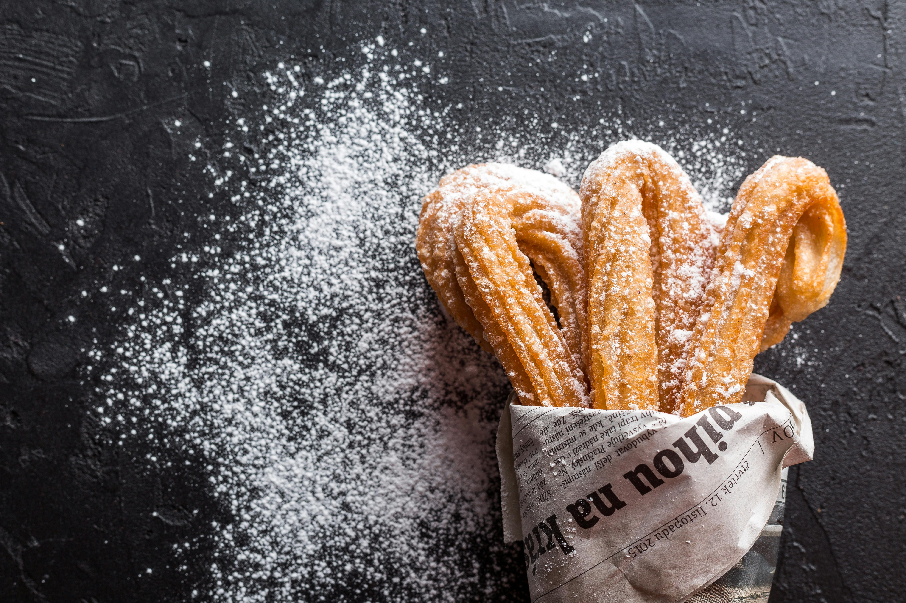

Churros
Back to Recipes

Description: Crispy on the outside, soft inside — classic churros rolled in cinnamon sugar.
Ingredients
- 1 cup water
- 2 1/2 tablespoons sugar
- 1/2 teaspoon salt
- 2 tablespoons vegetable oil
- 1 cup all-purpose flour
- Oil for frying
- 1/2 cup sugar
- 1 teaspoon ground cinnamon
Steps
- In a saucepan, combine water, sugar, salt, and 2 tbsp oil. Bring to a boil then remove from heat.
- Stir in flour until mixture forms a ball.
- Heat oil in a deep fryer or skillet to 375°F (190°C).
- Transfer dough to a piping bag fitted with a star tip.
- Pipe strips of dough into hot oil and fry until golden.
- Drain on paper towels and roll in cinnamon sugar mixture.
- Serve warm with chocolate sauce if desired.